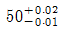
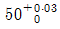
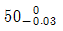
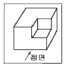
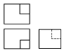
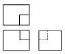
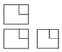
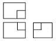
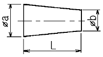
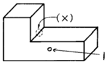

열처리기능사 (2004-04-04 기출문제)
1과목: 임의 구분
1. 소성가공이 아닌 것은?
- 단조
- 인발
- 주조
- 압연
(정답률: 72%)

2. 금속의 비중에 관한 설명이 옳지 못한 것은?
- 일반적으로 비중이 약 4.5 이하의 것을 경금속(light metal)이라 한다.
- 단조,압연,드로오잉 가공한 것은 주조상태의 것보다는 비중이 작다.
- 비중이 크다는 것은 무겁다는 뜻이며, 구리, 수은, 니켈 등은 중금속이다.
- 동일한 금속일지라도 금속의 순도, 온도 및 가공법에 따라서 비중이 변한다.
(정답률: 47%)
3. 면심입방격자의 기호는?
- HCP
- BCC
- FCC
- BCT
(정답률: 80%)
4. 용융금속의 응고에서 용융점이 내부로 전달되는 속도를 Vm라 하고 이 때의 결정입자 성장속도를 G라 하면 주상(columnar)결정이 생기는 가장 좋은 조건은?
- G ＜ Vm
- G = Vm
- G ≦ Vm
- G ≧ Vm
(정답률: 52%)
5. 상온에서 순철의 결정구조는?
- 면심입방격자
- 정방격자
- 조밀육방격자
- 체심입방격자
(정답률: 56%)
6. 주철에서 백선화 촉진원소가 아닌 것은?
- Mo
- Cr
- Mn
- Si
(정답률: 44%)
7. 금속의 일반적인 성질 중 가장 옳은 것은?
- 열과 전기의 전도체이다.
- 전성 및 연성이 나쁘다.
- 상온에서 기체이며 비결정체이다.
- 빛에 대하여 투명체이다.
(정답률: 75%)
8. 일반적으로 가공한 재료를 고온으로 가열할 때 발생되지 않는 현상은?
- 결정입자의 성장
- 내부응력 제거
- 재결정
- 경화
(정답률: 41%)
9. 다음 특수강 중 저망간강은?
- 자경강
- 스테인리스강
- 듀콜강
- 고속도강
(정답률: 60%)
10. 주성분이 구리인 구리합금의 종류가 아닌 것은?
- 톰백
- 문쯔메탈
- 포금
- 탕칼로이
(정답률: 67%)
11. 황동(brass)의 주성분은?
- Cu-Aℓ
- Cu-Pb
- Cu-Sn
- Cu-Zn
(정답률: 81%)
12. 구리에 대한 설명 중 틀린 것은?
- 녹는 점은 약 1083℃이다.
- 원자량은 약 63.6 이다.
- 상온에서 체심입방격자이다.
- 전기, 열의 양도체이다.
(정답률: 72%)
13. 공작기계용 절삭공구재료로써 가장 많이 사용되는 것은?
- 연강
- 회주철
- 저탄소강
- 고속도강
(정답률: 67%)
14. Fe-C 상태도에서 공석점 이상의 강은?
- 저공석강
- 과공석강
- 공석강
- 아공석강
(정답률: 82%)
15. 탄소강의 주성분 원소는?
- 철과 규소
- 규소와 망간
- 철과 탄소
- 철과 인
(정답률: 87%)
16. 물체의 보이지 않는 곳의 모양을 나타내는 선은?
- 피치선
- 파선
- 2점 쇄선
- 1점 쇄선
(정답률: 72%)
17. 다음 중 가상선을 사용하지 않는 경우는?
- 인접 부분을 참고로 표시하는 경우
- 특수한 가공을 하는 부분을 표시하는 경우
- 가공 전후의 모양을 표시하는 경우
- 같은 모양의 되풀이를 표시하는 경우
(정답률: 67%)
18. 도면에 치수숫자와 같이 사용하는 기호 중 45° 모따기를 나타내는 것은?
- P
- C
- R
- t
(정답률: 87%)
19. 제도 용지의 짧은 변과 긴 변의 길이의 비는?
- √2 : √3
- 1 : 2
- 1 : √2
- 1 : √3
(정답률: 50%)
20. 풀리의 암(arm)을 단면도로 그릴 때 가장 적합한 단면도법은?
- 온단면도법
- 회전 단면도법
- 한쪽 단면도법
- 계단 단면도법
(정답률: 65%)
2과목: 임의 구분
21. 기계제도에서는 주로 몇 각법을 이용하여 제도하는가?
- 1 각법
- 2 각법
- 3 각법
- 4 각법
(정답률: 86%)
22. 도면에서 원칙적인 길이 치수의 단위는?
- m
- mm
- cm
- inch
(정답률: 90%)
23. 다음 중 공차값이 가장 작은 치수는?

- 50±0.01


(정답률: 80%)
24. 구멍과 축의 끼워맞춤 치수 ø10H8h7 에서 구멍의 IT공차 등급은?
- 8급
- 7급
- 1급
- 10급
(정답률: 55%)
25. 다음 물체를 제 3각법으로 옳게 도시한 것은? (단, 화살표 방향을 정면으로 한다)





(정답률: 81%)
26. 다음 도형에서 테이퍼 값을 구하는 옳은 식은?

- b / a
- a / b
- (a + b) / L
- (a - b) / L
(정답률: 86%)
27. 나사의 일반 도시 방법 설명 중 틀린 것은?
- 수나사의 바깥지름과 암나사의 안지름은 굵은 실선으로 도시한다.
- 완전 나사부와 불완전 나사부의 경계는 굵은 실선으로 도시한다.
- 나사를 끝단에서 보고 그릴 때 나사의 골은 가는 실선으로 원주의 3/4 정도만 그린다.
- 수나사와 암나사의 조립부를 그릴 때는 암나사를 위주로 그린다.
(정답률: 53%)
28. 담금질한 고속도강의 뜨임에 가장 적합한 온도 범위는?
- 180∼200℃
- 250∼300℃
- 350∼450℃
- 550∼600℃
(정답률: 74%)
29. 드릴과 같이 길이가 긴 물품을 기름 속에 담금질할 때 가장 적당한 방법은?
- 수평으로 눕혀서 한다.
- 수직으로 세워서 수직 방향으로 한다.
- 수평면과 약 45° 정도 경사시켜서 한다.
- 수평면과 약 15° 정도 경사시켜서 한다.
(정답률: 81%)
30. 구조용 탄소강을 담금질 후 뜨임을 하여 쓰는 이유는?
- 절연성을 증가시키기 위해서
- 결정립을 조대화하고 결정의 성장을 돕기 위해서
- 강자성을 갖게 하기 위해서
- 인성을 증가시키기 위해서
(정답률: 69%)
31. 안전표지판의 기본 재료로 적합하지 않은 것은?
- 방식가공을 한 철판
- 알루미늄판
- 목재판
- 합성수지판
(정답률: 82%)
32. 구상화 풀림의 일반적인 목적이 아닌 것은?
- 기계적인 가공성 증가
- 강인성 증가
- 취성 증가
- 담금질 균열의 방지
(정답률: 74%)
33. 과잉 침탄이 생긴 재료는 먼저 어떤 처리를 하는 것이 좋은가?
- 직접 담금질 한다.
- 먼저 조직의 미세화 처리를 한다.
- 구상화 풀림처리를 한다.
- 다시 침탄 처리 한다.
(정답률: 66%)
34. 가스(GAS) 침탄에 이용되는 침탄제는?
- 목탄
- 암모니아
- 염화나트륨
- 메탄가스
(정답률: 50%)
35. 강의 경화능 시험법에는 어떤 방법이 많이 쓰이는가?
- 탐만 시험법
- 조미니 시험법
- 현미경 시험법
- 술퍼 프린트법
(정답률: 80%)
36. 금속의 화색 소실 온도는 약 몇 ℃인가?
- 100
- 200
- 550
- 1200
(정답률: 62%)
37. 전기가 방전되어 스파크가 발생하면 공기 중에 무엇이 생성되는가?
- 오존
- 수소
- 질소
- 탄소
(정답률: 51%)
38. 합금공구강(STS3)의 담금질 온도는 약 어느 정도인가?
- 380℃
- 520℃
- 830℃
- 1200℃
(정답률: 40%)
39. 시안화물이 강과 작용하여 침탄과 동시에 질화가 진행되는 것은?
- 고체 침탄
- 가스 침탄
- 액체 침탄
- 항온 침탄
(정답률: 47%)
40. 염욕로에서 사용되는 염욕제로서 가장 높은 온도용 염욕제는?
- NaNO3
- BaCl2
- KNO2
- CaCO3
(정답률: 84%)
3과목: 임의 구분
41. 전기로에 사용되는 발열체 중 비금속 발열체는?
- 니크롬선
- 칸탈선
- 백금선
- 흑연질
(정답률: 60%)
42. 열처리 작업에서 급냉각제와 관련이 가장 적은 것은?
- 물
- 증류수
- 공기
- 소금물
(정답률: 70%)
43. 스프링강의 열처리 주 목적은?
- 산화성 부여
- 탄성 부여
- 연성 부여
- 전성 부여
(정답률: 82%)
44. 평면의 냉각속도를 1 이라 할 때 (x)의 냉각속도는?

- 3
- 1/3
- 7
- 1
(정답률: 73%)
45. 열처리로의 전열 방식이 아닌 것은?
- 복사
- 저항
- 대류
- 전도
(정답률: 71%)
46. 절연이 열화된 부분에 누전이 발생하여 감전 등 위험의 발생을 방지하기 위해 설치하는 것은?
- 접지공사
- 방전물
- 전열제
- 배전설비
(정답률: 50%)
47. 담금질 균열의 가장 큰 원인은?
- 담금질 전의 풀림조직이 충분할 때
- 담금질 직후 뜨임 처리를 하지 않았을 때
- 재질 및 질량에 대하여 냉각 속도가 느릴 때
- 시간 담금질을 실시 하였을 때
(정답률: 51%)
48. 기름이 묻어있는 재료를 열처리할 때 그 전처리로서 탈지에 사용할 수 있는 것으로 가장 적합한 용제는?
- 트리클로로에틸렌
- 염산
- 황산
- 염화제이철용액
(정답률: 58%)
49. 강의 열처리 작업이 아닌 것은?
- 담금질
- 뜨임
- 풀림
- 무전해전착
(정답률: 93%)
50. 산 세정의 목적을 바르게 설명한 것은?
- 표면을 거칠게 한다.
- 산화피막,녹을 제거시킨다.
- 염을 부착시킨다.
- 스케일 형성을 도와준다.
(정답률: 88%)
51. 열전온도계에서 가장 높은 온도를 측정하는데 사용되는 것은?
- 철-콘스탄탄
- 동-콘스탄탄
- 백금-백금로듐
- 알루멜-크로멜
(정답률: 66%)
52. 화염경화시에 사용되며, 물체가 발하는 복사에너지를 열전대에 연결시켜 온도를 측정하는 것은?
- 열전온도계
- 저항식온도계
- 전류식온도계
- 복사온도계
(정답률: 68%)
53. 염욕 처리로 할 수 없는 열처리는?
- 서브제로 처리
- 마르 퀜칭
- 항온 열처리
- 마르 템퍼링
(정답률: 61%)
54. 침탄 부품에 나타나는 결함 중 경화불량이 생기는 원인으로 틀린 것은?
- 침탄 열처리시 침탄이 부족할 경우
- 담금질할 때 탈탄이 되었을 때
- 담금질 온도가 높을 때
- 냉각 속도가 느릴 때
(정답률: 44%)
55. 고주파 경화시 발생되는 결함이 아닌 것은?
- 담금질 균열
- 연점
- 박리
- 수축공
(정답률: 32%)
56. 근로자가 안전 보호구를 선택 하고자 할 때 유의 할 사항 중 관련이 가장 먼 것은?
- 사용목적에 적합할 것
- 완성제품의 가격에 따라 선택할 것
- 사용법과 손질하기가 쉬울 것
- 크기가 근로자에게 알맞을 것
(정답률: 92%)
57. 산화, 탈탄에 의한 직접적인 열처리 불량이 아닌 것은?
- 담금질 무늬가 된다.
- 열처리 변형이 생기기 쉽다.
- 균열을 일으키기 쉽다.
- 표면이 매끄러워진다.
(정답률: 80%)
58. 저탄소강의 표면에 탄소를 침입시키는 처리는?
- 침탄
- 질화
- 칼로라이징
- 세라다이징
(정답률: 84%)
59. 고속도 공구강의 주요 성분원소가 아닌 것은?
- Cr
- W
- Mo
- Cu
(정답률: 60%)
60. 마텐자이트 조직이 경도가 큰 이유가 아닌 것은?
- 결정립의 미세화
- 급랭으로 인한 내부응력
- 탄소원자에 의한 Fe격자의 강화
- α Fe+Fe3C 혼합물 생성
(정답률: 46%)